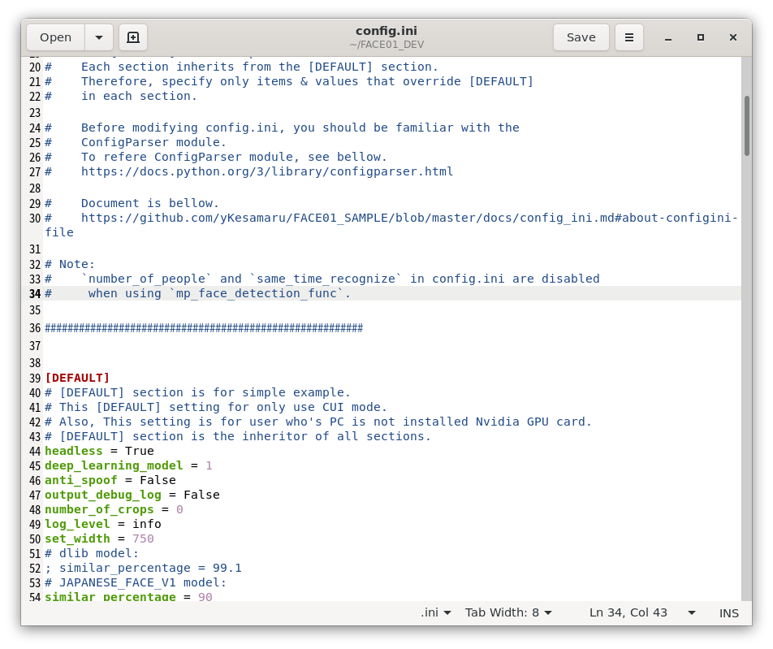
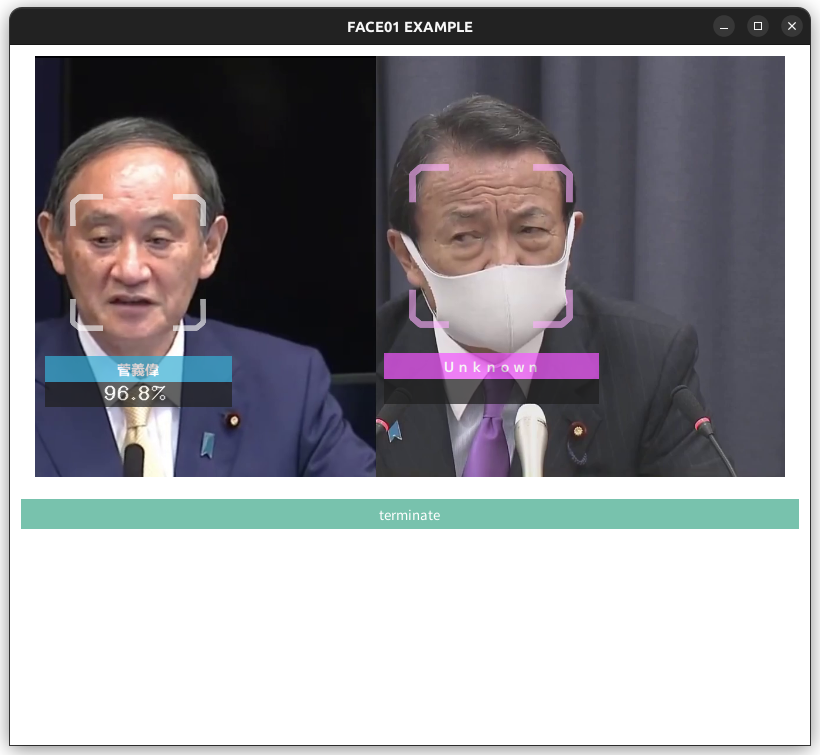

Dockerを使ってFACE01を使う
ここではDockerを使って煩雑な環境構築なしにFACE01を使用する手順を解説します。
こちらで用意している`Dockerイメージ`を使ってFACE01を使うのが一番簡単でローカル環境も汚しません⭐️''

Docker imageをプル
Dockerイメージをダウンロード（プル）しましょう。

docker pull tokaikaoninsho/face01_gpu

使用するPCがNVIDIA GPUを使用しているなら、`face01_gpu`のような名前のついた`Docker image`を使用してください。
そうでなければ、`face01_no_gpu`のような名前のついた`Docker image`を使用してください。
When using face01_gpu
まずお使いのPCでNvidia GPUが使用可能かチェックしましょう。
lspci | grep -i nvidia
Docker Imageをダウンロード（プル）する
docker pull tokaikaoninsho/face01_gpu
DockerイメージのTAG, IMAGE IDを確認しましょう
docker images
DockerでGUIが使えるようにxhostの設定をします
xhost +local:
よくわからない場合はDockerでGUIアプリケーションを開く基本的な押さえどころを参考にしてください。
ディスプレイマネージャとしてwaylandを使用している場合
ご用意しているdocker イメージはX11環境で作成しております。ですのでお使いのディスプレイマネージャがX11あるいはXWaylandであれば使用できますが、Waylandには対応していません。この場合はご自身でイメージをビルドしていただく必要があります。build_docker_image.mdをご参照ください。
image idを指定してコンテナを起動します
docker run --rm -it \
--gpus all -e DISPLAY=$DISPLAY \
-v /tmp/.X11-unix:/tmp/.X11-unix \
<image id>
開発用としてコンテナを起動させたい場合には、--rmを除去し、永続化のためのフォルダを指定してください。
例えば以下のようにします。（必要に応じて細部を変更してください。）
docker run -it \
--gpus all -e DISPLAY=$DISPLAY \
-v /tmp/.X11-unix:/tmp/.X11-unix \
-v /path/to/host/folder:/path/to/container/folder \
<image id>
ここで、'/path/to/host/folder'はホスト側の永続化したいデータを保存するフォルダパスを指定し、'/path/to/container/folder'はコンテナ内でそのデータを利用するためのフォルダパスを指定します。
例えば、ホストの'/home/user/dataフォルダ'をコンテナ内の'/mnt/data'にマウントしたい場合は、以下のようになります。
docker run -it \
--gpus all -e DISPLAY=$DISPLAY \
-v /tmp/.X11-unix:/tmp/.X11-unix \
-v /home/user/data:/mnt/data \
<image id>
NOTE
Webカメラなどを接続して使用する場合、以下のコマンドを実行してください。
この場合/dev/video0を指定していますが、ご利用の環境によってはパスがちがう可能性があります。
docker run --rm -it \
--gpus all -e DISPLAY=$DISPLAY \
--device /dev/video0:/dev/video0:mwr \
-v /tmp/.X11-unix/:/tmp/.X11-unix: <image id>
もしデバイスパスがちがう場合は以下を試してください。
ls /dev/video*
絶対に忘れてはいけないポイント
Python仮想環境をアクティベート
Python仮想環境を起動してください。
# Activate venv (IMPORTANT!)
. bin/activate

Python仮想環境のアクティベートを忘れないようにしましょう。
例：
# Docker imageを確認する
user@user:~/bin/FACE01_DEV/assets$ docker images
REPOSITORY TAG IMAGE ID CREATED SIZE
tokaikaoninsho/face01_no_gpu 3.0.03_3 87c09dec0a45 4 days ago 13.4GB
tokaikaoninsho/face01_gpu 3.0.03_3 ce2952ad62d6 4 days ago 22.3GB
tokaikaoninsho/face01_no_gpu 3.0.03_2 6f03f200582d 5 days ago 13.2GB
tokaikaoninsho/face01_gpu 3.0.03_2 c4203ae49bec 6 days ago 22.1GB
face01_gpu 3.0.03_1 abd4c0896c00 7 days ago 21.9GB
tokaikaoninsho/face01_gpu 3.0.03_1 abd4c0896c00 7 days ago 21.9GB
# xhostにlocalを加える
user@user:~/bin/FACE01_DEV/assets$ xhost +local:
non-network local connections being added to access control list
# localが加わっているか確認
user@user:~/bin/FACE01_DEV/assets$ xhost
access control enabled, only authorized clients can connect
LOCAL:
SI:localuser:user
# コンテナをGUIモードで起動
user@user:~/bin/FACE01_DEV/assets$ docker run --rm -it \
--gpus all -e DISPLAY=$DISPLAY \
-v /tmp/.X11-unix:/tmp/.X11-unix ce2952ad62d6
==========
== CUDA ==
==========
CUDA Version 11.6.1
Container image Copyright (c) 2016-2023, NVIDIA CORPORATION & AFFILIATES. All rights reserved.
This container image and its contents are governed by the NVIDIA Deep Learning Container License.
By pulling and using the container, you accept the user and conditions of this license:
https://developer.nvidia.com/ngc/nvidia-deep-learning-container-license
A copy of this license is made available in this container at /NGC-DL-CONTAINER-LICENSE for your convenience.
*************************
** DEPRECATION NOTICE! **
*************************
THIS IMAGE IS DEPRECATED and is scheduled for DELETION.
https://gitlab.com/nvidia/container-images/cuda/blob/master/doc/support-policy.md
# Python仮想環境をアクティベートする
docker@bb030de27861:~/FACE01_DEV$ . bin/activate
# 試しにエグザンプルコードを使ってみる
(FACE01_DEV) docker@bb030de27861:~/FACE01_DEV$ python example/simple.py
# config.iniファイルをgeditで開き、編集する
(FACE01_DEV) docker@bb030de27861:~/FACE01_DEV$ gedit config.ini
# GUIウィンドウを作成するエグザンプルコードを使ってみる
(FACE01_DEV) docker@bb030de27861:~/FACE01_DEV$ python example/display_GUI_window.py
 
xhost
使い終わったらxhostからlocalを削除しましょう
xhost -local:
トラブルシューティング
Dockerコンテナを機動したがエグザンプルコードが動かない
プルしたイメージが最新か確認してください
Python仮想環境を起動したか確認してください
xhostのlocalを追加したか確認してください
エグザンプルコードは起動したが処理がおそすぎる
Nvidia GPUを搭載したPCかどうかを確認してください
コンテナとホストのCUDAドライバを確認してください
ホストのCUDAドライバのバージョンによってはコンテナ内のCUDAドライババージョンをサポートしていない場合があります。
config.iniのuse_pipeをFalseに設定してください。
ごく稀に、ホストOSとDocker内のCUDAドライバの相性問題が発生することがあります。
そんなときはlibcudart.so.11.0などが見つからないエラーが出力されるを参照してください。

その他
こちらのトラブルシューティングも参考にしてください。
それでも解決しない時
Issueに投稿してください